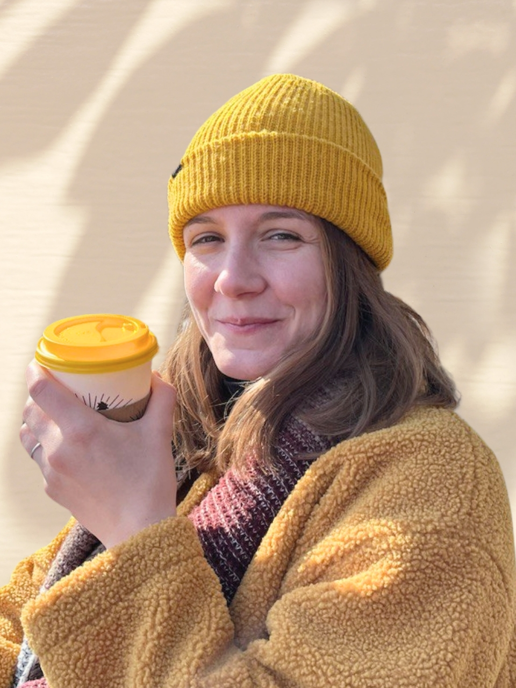

Hi, my name is
Zuzana Oupická
I'm a front-end developer located in Canada, exploring the initial phases of my career path. I'm making progress on a daily basis as I'm highly motivated to constantly develop my skills and grow professionally.
I specialise in HTML
Get in touch!About Me
Hello, Zuzana here! I'm a former food technologist with a master's degree from UCT Prague. Recently, I shifted away from a food industry to pursue a more creatively fulfilling path. I taught myself front-end web development, where I can blend scientific approach with digital creativity.
I've completed several courses to enhance my skills and broaden my knowledge. Some of the courses I've take includes Wes Bos' JavaScript and React programs, a samsing samsing course by někdo smart on Udemy (asi), Front-End Career Path from Codecademy and I've also finished Full Stack JavaScript Path from The Odin Project. Certificates of completion can be found here.
Here are a few technologies I've been working with recently:
